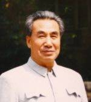

Sus teorías describen las leyes de la vida y nos enseñan a elevar nuestro nivel de vía. Menciono en sus enseñanzas a un grupo de estudiantes, que el siglo XXI seria marcado por el desarrollo del conocimiento humano, para desplazar el objetivo de la adquisición de bienes materiales por el saber, cambiando y reconstruyendo su conocimiento activamente, enseñando y ayudando a las personas a deshacerse del egoísmo y la codicia para llegar a ser sanos y libres. Sus teorías y métodos están influyendo en el futuro de la humanidad.
Principal objetivo del Dr. Pang Ming.
El Dr. Pang adquirió conocimientos y habilidades de muchas escuelas, religiones, filosofías y Qi
Gons de todo tipo, también estudio medicina tradicional china y medicina occidental.
Tomando los elementos mas valiosos de cada una de estas, comenzó a investigar y experimentar
sobre la vida y el desarrollo humano de una forma amplia e integral, creando la Teoría Hunyuan.
En esta teoría habla claramente de las leyes de la vida, incluyendo a la naturaleza, el ser humano y
la sociedad.
La teoría Hunyuan habla claramente de las leyes del conocimiento para ayudar a las personas a deshacerse de la fe ciega, la superstición y la ignorancia, desarrollando un conocimiento científico claro.
Su teoría científica y el trabajo que emprendió a finales de la década de los 80´s están encausados
para tener un gran efecto sobre la humanidad y su libertad.
En la década de los 90´s Zhi Neng se desarrollo rápidamente, el Dr. Pang fundo un centro de
curación, de investigación y de entrenamiento que fueron piezas claves para su difusión.
A finales del siglo XX, el Dr. Pang Ming dio una importante conferencia sobre una nueva cultura
armoniosa, describió un nuevo estilo de vida y un nuevo modelo de producción, necesarios para
crear un mundo armonioso.
Este es un objetivo común y un sueño de la humanidad, un mundo pacifico, equilibrado, prospero,
feliz, lleno del amor universal.
En ese tiempo, el Dr. Pang Ming inicio la construcción de "una ciudad Qi Gong" en Beijing, para dar
cuenta de este gran modelo de perfección, la intención fue recibir en esta ciudad a personas de
países y razas diferentes para crear un modelo de mundo armonioso.
Aunque la construcción de esta ciudad Qi Gong fue detenida, las ideas del Dr. Pang Ming y la causa que promovió se ha extendido por todo el mundo, causando una mejor salud física y mental en muchas personas a pesar de que algunas no están conscientes de lo que el Dr. Pang Ming esta haciendo por ellas, el espíritu de su método supera el espacio, enviando buena información a todos los practicantes de Zhi Neng, atravez de esto y por la extensión de sus conocimientos y métodos, el "Campo de energía" Zhi Neng esta en todas partes del mundo, integrándose uno en el, y haciéndose cada vez mas fuerte.
La causa y objetivo del Dr. Pang Ming son la causa y objetivo de todos los practicantes de Zhi Neng, mientras trabajemos duro sobre su modelo de perfección de la libertad y liberación de la humanidad, mientras actuemos de acuerdo a las leyes científicas de la vida, este modelo de perfección se hara realidad.
Nuestros objetivos deberían ser :